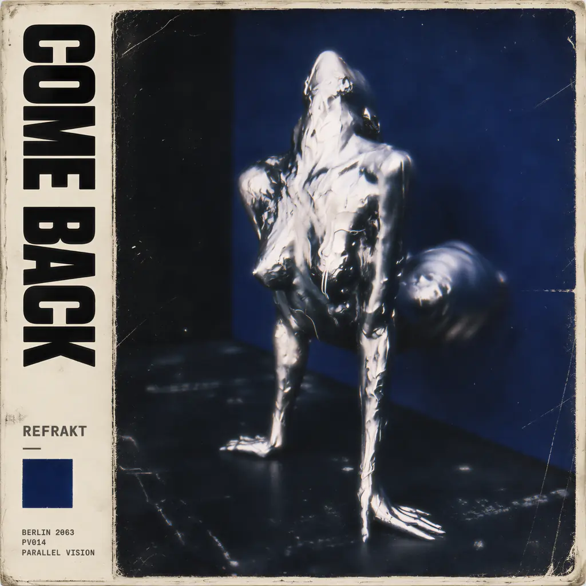

Parallel Vision / PV014 / 2026

Come
Back
REFRAKT (NY)
New York producer Ian Daly returns to Parallel Vision with Come Back. One original and three distinct interpretations move between driving electronic disco, hypnotic progressive tension and a retro-disco atmosphere. The same central idea takes on four different shapes.
- Beatport
- 04 Dec 2026
- All platforms
- 18 Dec 2026
Four versions.
01 Original / 03 Remixes01
Come Back
Original Mix / REFRAKT (NY)The original recording and the melodic thread at the centre of the release.
02
Come Back
Blex (AR) RemixDriving analogue-disco motion, pulsing synths and a classic Italo-disco sensibility.
03
Come Back
Ëlorian RemixA hypnotic progressive build, opening gradually into a spacious, open-air atmosphere.
04
Come Back
Juan Soto Disco MixJapanese-inspired retro-disco colours, a touch of 1990s nostalgia and vocals recorded by Juan Soto himself.